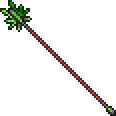
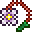
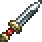
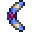
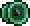

Воин (warrior) - это класс использующий оружие ближнего боя ,а именно мечи, оружие на цепи, копья и подобное. Для игры за воина важно иметь большой показатель защиты и ХП. У этого класса стабильный показатель урона, главная его роль в мультиплеере - это отвлечение врагов на себя для защиты более слабых классов.
 | Мечи |
|  | Копья |
|  | Оружие на цепи |
|  | Кинжалы |
|  | Бумернаги |
|  | Йо-йо |